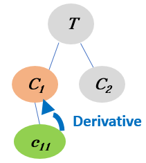

Health-related Quality of Life Needs of Patients with Long-term Respiratory Illnesses
This is a collection of video segments from YouTube videos with patient stories.
They have been automatically segmented, characterised and linked to domain concepts.
The videos in this page have been linked via "Derivative Linking" which means:
To become aware of a specific concept (Green oval) from a topic T, you will explore videos about its parent concept which is more generic (Orange oval).

Become aware of the concept EXERCISE by exploring its parent concept REHABILITATION from the topic ENVIRONMENT
Each segment will start from a time point in the video and will stop when the corresponding concepts are covered.
You can re-watch the segment or watch other parts of the video, if you wish so.
The next video segment mentions REHABILITATION ( related to ENVIRONMENT ). The segment is taken from a YouTube video with ID= aHAbRVZOxnk , and starts at 2.58 with a duration of 41 seconds.
The next video segment mentions EXERCISE ( related to ENVIRONMENT ). The segment is taken from a YouTube video with ID= uJoY4oMLXEY , and starts at 1.38 with a duration of 37 seconds.
The next video segment mentions EXERCISE ( related to ENVIRONMENT ). The segment is taken from a YouTube video with ID= VyGp12XbPzs , and starts at 0.59 with a duration of 81 seconds.
The next video segment mentions EXERCISE ( related to ENVIRONMENT ). The segment is taken from a YouTube video with ID= GV3Rew061FA , and starts at 1.31 with a duration of 216 seconds.
You watched a video segment about (REHABILITATION) whcih is a generic concept that includes (EXERCISE). These concepts are related to ENVIRONMENT.
The video segments were automatically extracted from popular YouTube videos on Healthy related Quality of life-Respiratory Illness, using algorithms for segmentation, characterisation and linking based on a theory for concept learning.
We hope you found the collection of video segments helpful.